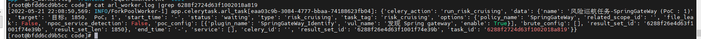
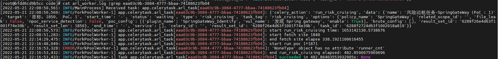
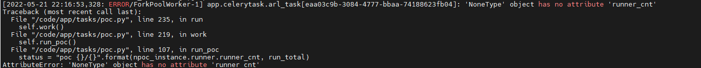

常见问题
1. 密码忘记了怎么办？
Q：可以执行下面的命令，然后使用admin/admin123就可以登录了。
docker exec -ti arl_mongodb mongo -u admin -p admin
use arl
db.user.drop()
db.user.insert({ username: 'admin', password: hex_md5('arlsalt!@#'+'admin123') })
2. 如何修改任务并行数量？
Q: 修改下面文件43行中的 -c 参数即可，默认为2, 重启容器生效。 https://github.com/TophantTechnology/ARL/blob/master/docker/docker-compose.yml#L43
3. 运行出现异常？
Q: 可以执行下面的三条命令并尝试触发错误观察输出有什么异常。
docker-compose ps
docker-compose logs -f --tail=10
tail -f *.log
4. 容器一直重启，查看日志提示权限错误
排查下宿主机是否开启了selinux , 将selinux功能关闭即可。
5. Docker 环境的 ARL 如何更新？
git pull 是为了更新docker-compose.yml， docker-compose pull 是为了更新镜像， 如果碰到问题可以排查是否使用了三方镜像源。
git pull
docker-compose pull
docker-compose up -d
6. 任务结果为什么只有域名和IP结果？
可能任务下发时开启了全端口扫描，对于金融、银行存在防护设备的情况大量端口扫描、服务报文探测会出现异常。 可以选择Top 10端口扫描，或者关闭端口扫描，将只会探测80,443端口。
7. 如何判断任务是否还在运行
1). 任务状态长时间没有改变，并且后下发的多个（大于等于2）任务都已经执行了，当前任务肯定是异常了。 2). 根据下面的异常任务原因排查看任务日志是否有持续输出。 3). 根据网络带宽，CPU，内存占用情况判断任务是否还在运行。
8. 异常任务原因排查
一般错误异常到会写入到 arl_worker.log 日志中 下面是一个简单的例子.
1). 先在后台找到Task ID cat arl_worker.log | grep 6288... 
{kind=link}
2). 可以找到对应的Celery ID cat arl_worker.log |grep eaa03c9b-3084-4777-bbaa-74188623fb04 
{kind=link}
3). 再找到详细的堆栈错误信息 cat arl_worker.log |grep -A 20 "has no attribute" 
{kind=link}
9. 使用全端口扫描一直停在端口扫描阶段
可以从arl_worker.log，nmap进程是否还在，出网流量等外部状态判断任务是还在运行还是已经结束了。 如果任务没有在运行了，并且查看docker ps 发现容器重启过了，可能是大量端口扫描导致的docker 网卡出现了异常，任务被关闭了，但是任务状态并没有感知到。 如果确切有全端口扫描的需求，可以使用源码安装的方式运行ARL